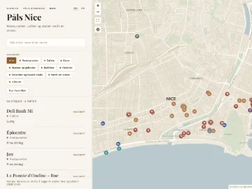
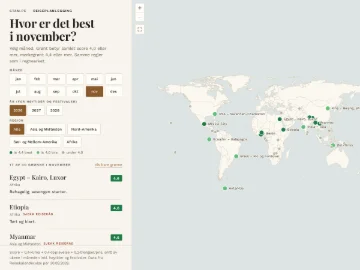

stam.pe
NO
/
EN
Påls apper
Små verktøy for reise og byer, laget for eget bruk.

Nabolag & gåturer
Påls byguider
Gater, torg og strøk verdt en omvei — med noen ruter å gå dem på. London, Nice og Oslo.
→

Reisekart & reisekalender
Reiseplanlegging
Beste reisetid per reisemål, måned for måned — rundt 40 steder utenfor Europa.
→